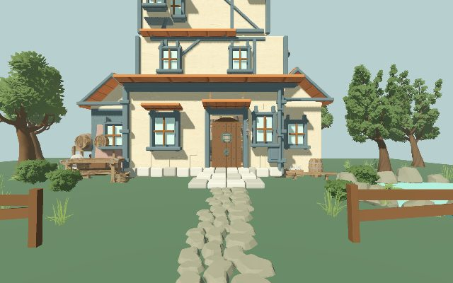
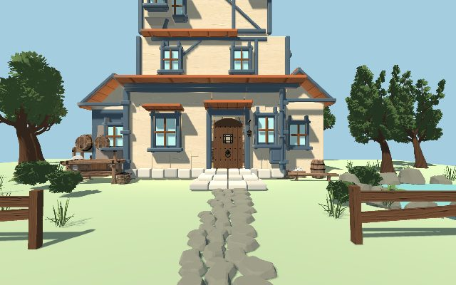
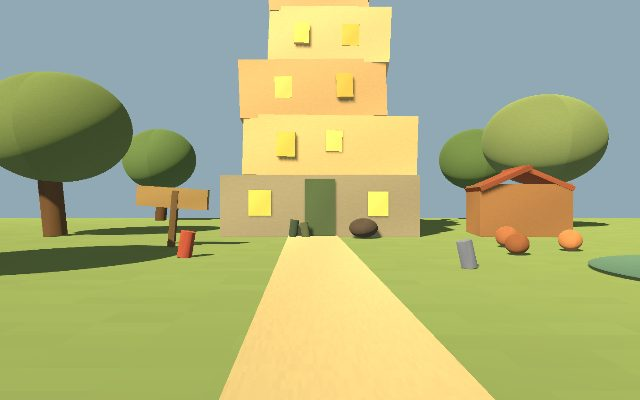
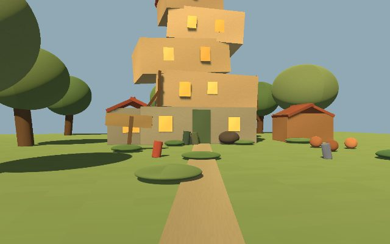
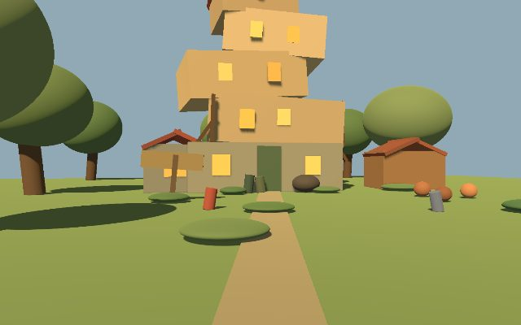

world-agent · case 001
陋居 · Godot Web 版本索引
以小说而非电影布景为准的德文郡歪斜多层红顶房屋。八个版本共享同一份引擎二进制，
各自只加载自己的数据包。Godot 4.7.1 Web 导出，单线程 gl_compatibility。
WASD移动
鼠标观察
Space跳跃
E开门
Esc释放鼠标
首次点击画面才捕获鼠标
表现版本真实几何与美术方向
这三个带 authored mesh 或卡片美术，是判断视觉效果的依据。
-
 01纸片剧场 v1
01纸片剧场 v110 张分层卡片 + 1 个可进入房间，最早的表现试验。
-

02完整室内 · clean_retro_3d1,057 mesh Blender GLB，12 房间、119 碰撞体，默认复古材质。
-

03完整室内 · hero_shooter_light与 02 同一份 pck，启动参数切到 case style.json 指定的英雄光照风格。
世界数据快照语义代理渲染，读 world.json
同一份代理渲染脚本读取不同 world.json 快照，只有原始盒体和颜色，没有 authored mesh。 这五个版本的室内内容全部位于一楼，楼梯实体数为 0，楼上只有阁楼与烟囱等外部体量，进不去。
-
 04revision 6（当前状态）
04revision 6（当前状态）77 实体，style.burrow_crooked_domestic_magic_v1
-

05快照 r0001 exterior v2burrow_grounds 首次出现，storybook diorama 风格。室内实体数为 0，纯外观。
-

06快照 r0002 light style v3补上木构支撑、杂草丛与鸡舍，仍为 storybook diorama 风格。
-
 07快照 r0003 book interior v1
07快照 r0003 book interior v1风格切到 light_hero_shooter_architecture，首次引入厨房室内锚点。
-

08快照 r0004 ground floor v2比 07 多 6 件一楼厨房陈设（八椅长桌、珐琅水槽、壁炉镜、魔法无线电等）。 外景视角与 07 完全相同，差异都在屋内。